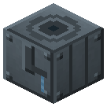

Артезианская скважина


Вода вдали от реки и моря.
Вода вдали от реки и моря. Бурение: 20 м на 1 обсадную трубу, привод - вал (3 л.с.) или пар. Водоносный горизонт: болото, джунгли - 20-40 м, равнина - 120, пустыня - 180. Дальше насос: вал 2 л.с. или пар; во влажном биоме до 18 mB/т, в пустыне 2. Трубы в слоте - бурит ниже горизонта (до 80 м), +25% за каждые 20 м. Воду сама отдаёт в котлы и баки рядом.
Параметры
| Эпоха | 2 — Пар и механика |
|---|---|
| Многоблок | нет |
| Привод | вал, пар |
| Баки, mB | 16000, 8000 |
| что делает | вода по влажности биома: болото 18 mB/т, поле 9, пустыня 2 |
| энергия на входе | вал 3/2 или пар 300/200 |
| из чего | бронзовая шестерня, железные листы, бронзовые трубы |
| л.с. | 3 бурение / 2 насос |
Числа
| артезианская скважина: шаг бурения на 1 обсадную трубу | 20 м |
|---|---|
| артезианская скважина: партия бурения | 200 т |
| артезианская скважина: пар на партию бурения | 300 mB |
| артезианская скважина: вал при бурении | 3 л.с. |
| артезианская скважина: партия насоса | 100 т |
| артезианская скважина: пар на партию насоса | 200 mB |
| артезианская скважина: вал насоса | 2 л.с. |
Кто кормит
- steam ← Парогенератор АЭС
- вал ← Паровая машина, Паровая машина высокого давления (трансмиссия)
Кого кормит
- water → Воздухоразделительная установка Линде, Электролизная ванна, Химический реактор, Контактный аппарат, Выпарной аппарат, Реактор высокого давления, Зольный чан, Солеварня, Селитряница, Парогенератор АЭС
Как устроено (из кода)
Артезианская скважина (B5): вода вдали от реки и моря. Ударно-канатное бурение партиями по STEP м: 1 обсадная труба + привод - вал (drillHp л.с.) или свой пар DRILL_STEAM. Кровля водоносного горизонта (Water.aquifer) по влажности биома: болото и джунгли - мелко, пустыня - глубоко. Дальше насос партиями PUMP_TIME (вал pumpHp л.с. или пар PUMP_STEAM), дебит Water.rate - по влажности; лежат трубы в слоте - бурит глубже горизонта (до Water.deepMax м), дебит растёт. Слот 0 обсадные трубы. Баки: 0 вода (выход, сама отдаёт в соседние котлы и баки), 1 пар.